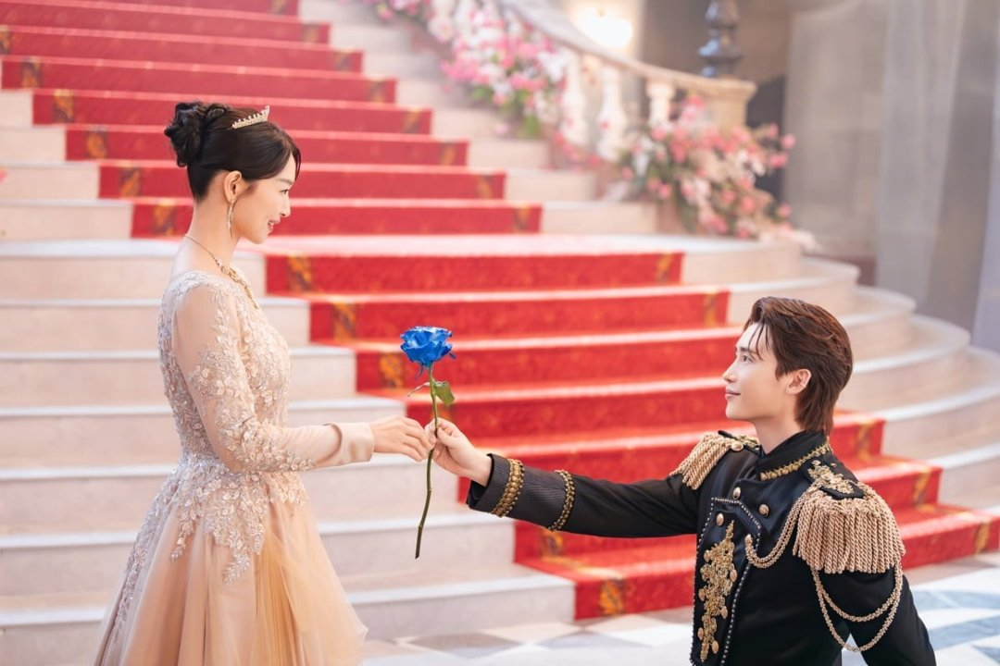
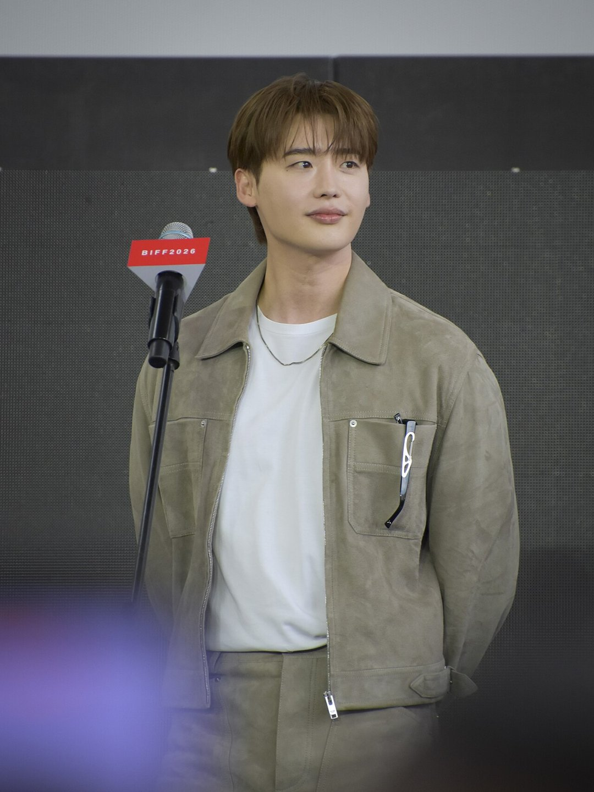
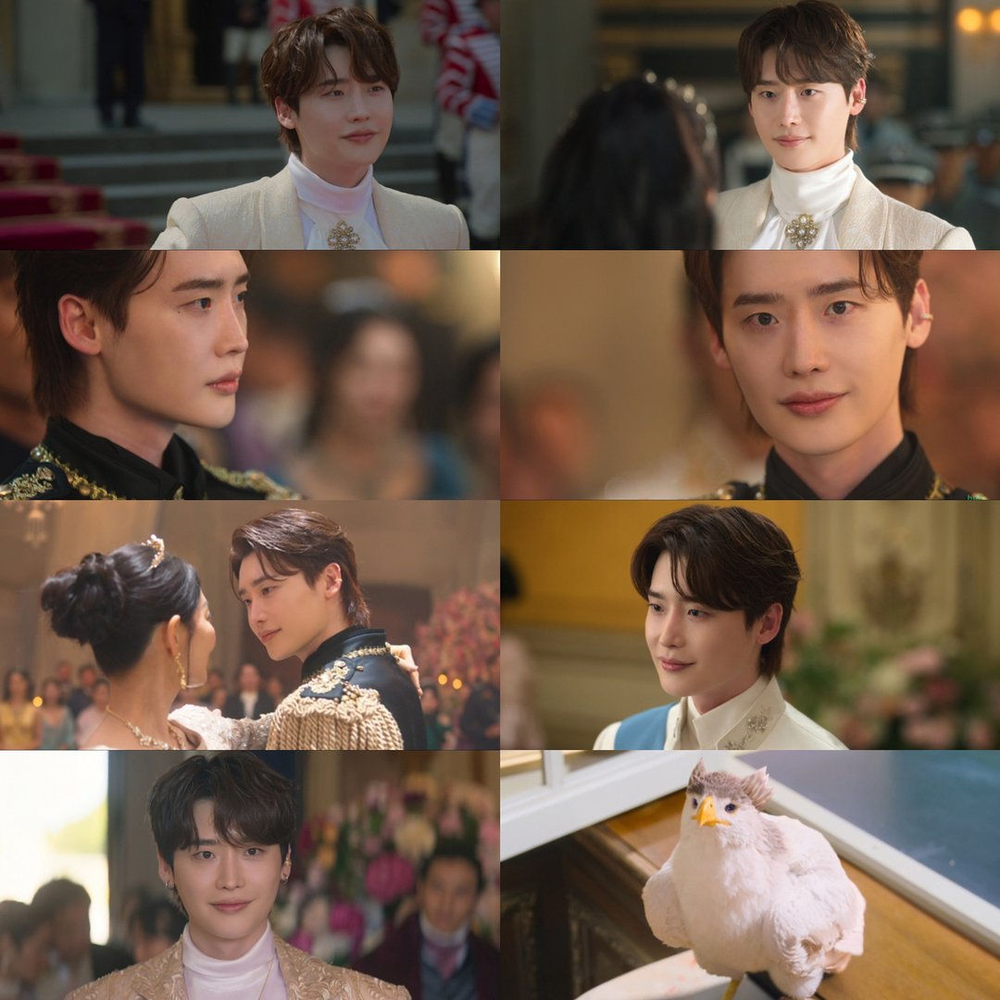
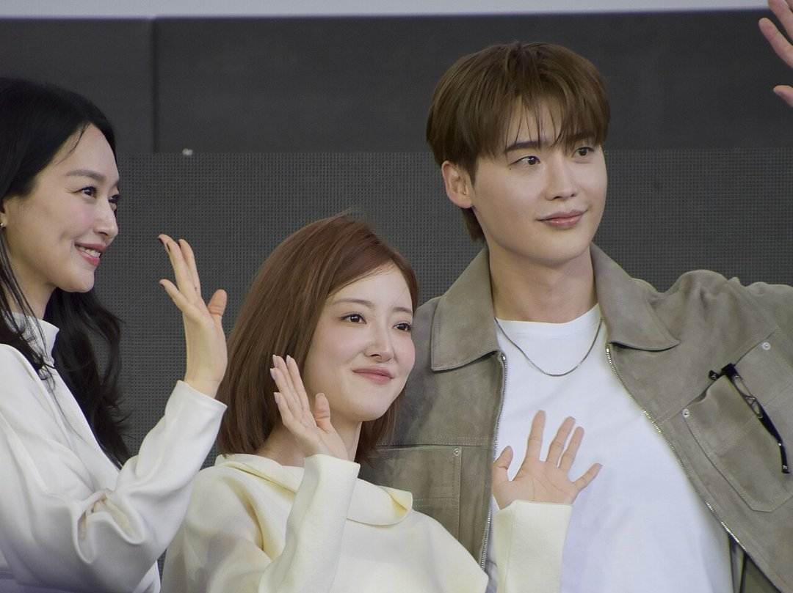

옆에 선 사람이 눈만 마주쳐도 기절한다는 왕자, 이 역을 맡으라는 대본을 받으면 어떨까요? 이종석은 디즈니+ '재혼황후'의 하인리 대본을 받고 처음엔 다른 배우를 추천했어요. 유튜브 '살롱드립'에서 털어놓은 캐스팅 뒷이야기와 1~4부 속 하인리 장면을 함께 정리했어요.
📷 사진 1 자리
▲ 디즈니+ '재혼 황후' 속 나비에(신민아)와 하인리(이종석) · 사진=디즈니+ 제공
원작 묘사가 너무 아름다워서
이종석은 원작 웹툰을 원래 알고 있었다고 했어요. 문제는 하인리의 묘사였죠. 그는 캐릭터가 너무 아름답게 그려져 있고, 옆 사람이 눈을 마주치면 기절하는 식이라 "쉬이 마음먹기 어려운 작품"이었다고 말했어요.
그래서 대본을 받고는 '이 배우가 하면 잘할 것 같다'며 다른 사람을 추천했대요. 진짜 잘생긴 남자가 해야 하는 역이라는 이유였어요. 마음을 돌린 건 '너의 목소리가 들려'를 함께한 조수원 감독이에요. 계속 연락하며 그를 찾았고, 결국 설득에 성공했어요.
📷 사진 2 자리
▲ 2026 부산국제영화제의 이종석 · 사진: Arielaortizb / CC BY-SA 4.0 / 위키미디어 공용
1~4부의 하인리, 첫인사부터 '나의 퀸'
부담이 이해되는 건 하인리가 나오는 장면들 때문이에요. 1~4부에서 하인리는 소문만 무성하던 서왕국 왕자로 동대제국 황실에 나타나요. 나비에(신민아)에게 건네는 첫인사가 "나의 퀸"이에요.
신년 무도회 장면도 하인리의 몫이에요. 소비에슈(주지훈)가 라스타(이세영) 쪽으로 향한 사이, 홀로 남은 나비에에게 손을 내미는 사람이 하인리거든요. 황실에서는 속을 알 수 없는 미소를 짓다가 나비에 앞에서만 말투가 부드러워지는 인물이에요.
📷 사진 3 자리
▲ '재혼 황후' 1~4부 속 하인리 장면 모음. 마지막 칸은 나비에 곁의 새 '퀸' · 사진=디즈니+ 제공
나비에 곁의 흰 새 '퀸'도 눈여겨볼 만해요. 하인리의 의상과 머리색, 눈동자 색까지 맞춰 만든 새라서 둘이 자꾸 겹쳐 보여요. 공식 스틸 모음에도 하인리 장면들 사이에 이 흰 새가 나란히 들어가 있죠.
왕자 의상과 사극 이야기
하인리의 화려한 왕자 의상에는 의외의 참고 자료가 있었어요. 임영웅의 콘서트 의상을 보고 아이디어를 얻었다는 거예요. 살롱드립에서는 사극 이야기도 나왔어요. 사극은 하지 않겠다던 과거 인터뷰 말을 두고 "경솔했다"며, 앞으로 최선을 다하겠다고 했어요.
📷 사진 4 자리
▲ 2026 부산국제영화제에 함께 선 신민아·이세영·이종석 · 사진: Arielaortizb / CC BY-SA 4.0 / 위키미디어 공용
공개 뒤 나온 기사는 그의 하인리에서 능글맞으면서도 과하게 힘을 주지 않는 대사 처리를 짚었어요. 낯간지러울 수 있는 "나의 퀸" 같은 대사를 어떻게 소화했는지가 1~4부의 관전 포인트예요.
✍️ 내 생각 자리 — 직접 본 소감·관점 2~3줄로 바꿔 주세요
하인리를 망설인 이유는 원작 속 '너무 아름다운 왕자'라는 설정 그 자체였어요. '재혼 황후'는 디즈니+에서 볼 수 있고, 5·6부는 11월 11일 공개돼요.



